Problema 292 de triánguloscabri
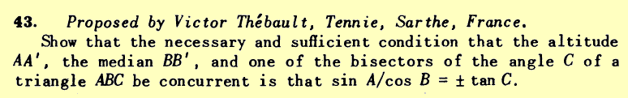 |
Propuesto por Juan Bosco Romero Márquez
|
Solución de Francisco Javier García Capitán
Usaremos el teorema
de Ceva, que precisamente da una condición necesaria y suficiente
para que tres cevianas de un triángulo sean concurrentes.
Necesitamos una expresión de cada uno de los cocientes
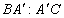
,
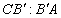
y 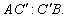
Para la altura tenemos, por definición de coseno,
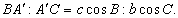
Para la mediana tenemos, por ser B' el punto medio,
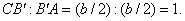
Para las bisectrices tenemos, por el teorema de la bisectriz,
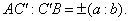
Entonces, según el teorema de Ceva, tendremos que la condición
del problema es equivalente a
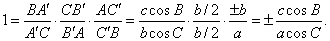
Usando el teorema de los senos y la relación anterior, podemos obtener
finalmente que
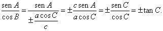
Todos los pasos dados en el proceso son reversibles, por lo que
la cuestión planteada por el problema queda resuelta.
Podemos plantearnos, ¿como son los triángulos que
cumplen esta condición? Escribámosla en la forma
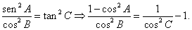
Sustituyamos la en cada caso usando el teorema del coseno y preguntemos a Mathematica
como queda la cosa:
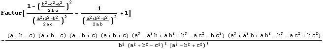
 Como era de esperar,
las fórmula no tiene sentido cuando el triángulo es rectángulo
en B o C: el denominador se anula. Veamos para que triángulos
se cumple el enunciado. Para ello, como ya hemos hecho en otras ocasiones, fijamos
el lado BC del triángulo y dejamos variable el vértice
A. Hallemos los vértices A correspondientes a los triángulos
que anulan el primero de los dos paréntesis del numerador. El lector
podrá comprobar que procediendo de forma parecida con los del segundo
paréntesis no se obtienen soluciones.
Como era de esperar,
las fórmula no tiene sentido cuando el triángulo es rectángulo
en B o C: el denominador se anula. Veamos para que triángulos
se cumple el enunciado. Para ello, como ya hemos hecho en otras ocasiones, fijamos
el lado BC del triángulo y dejamos variable el vértice
A. Hallemos los vértices A correspondientes a los triángulos
que anulan el primero de los dos paréntesis del numerador. El lector
podrá comprobar que procediendo de forma parecida con los del segundo
paréntesis no se obtienen soluciones.
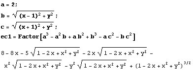
No resulta complicado obtener una expresión explícita de y
en función de x:
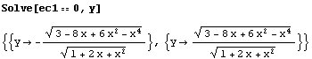
Ahora representamos y como función de x:
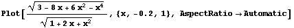
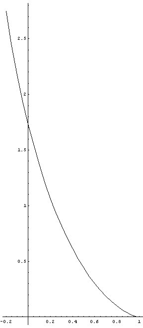 |
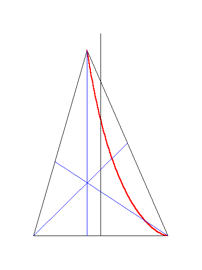 |
El siguiente applet muestra los triángulos cumpliendo la propiedad:
Figura 292ii.fig